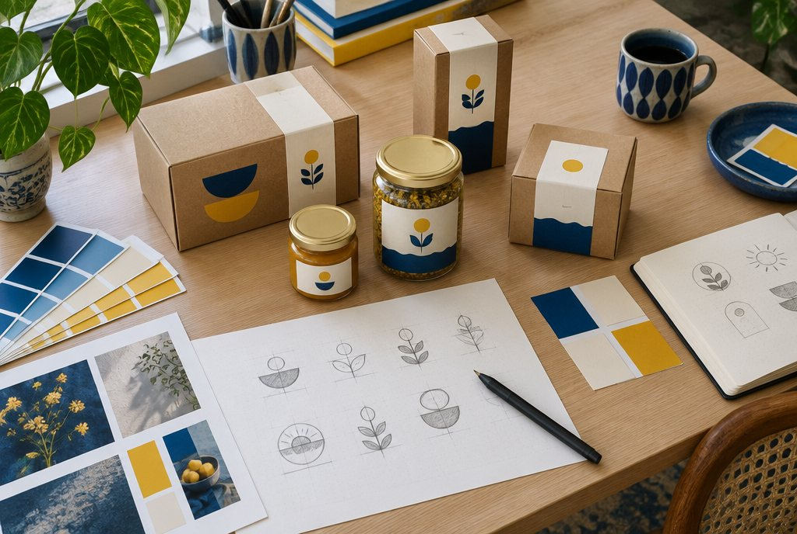

We dig.
The account, the funnel and the cost sheet. A clear view of what is working and where value is leaking.
Wildly creative. Commercially exacting. We bring media, creative, retention and technology together to grow what matters: your business.

Good company.
Ambitious brands we work with.


A memorable brand and a healthy business belong in the same conversation.
We’re a senior-led growth studio for brands ready to think bigger. Media, creative, retention and technology share a strategist, a thesis and a P&L.
So the idea that earns attention is connected to the experience that converts it—and the reason a customer comes back.
Meet Monday MarketingFrom what a brand says to how it sells. A closer look at the worlds we help build.
Explore our client book
A new angle. A better question. A creative route that nobody saw coming.
We give ideas room to surprise us, then put them to work. Every experiment has a hypothesis. Every learning informs the next decision.
Five connected disciplines. The same senior team stays close to the strategy, the execution and the numbers.

Spend with a commercial argument.
Meta, Google, Amazon and quick commerce, planned against contribution margin and the cost of acquiring a customer.
Explore the serviceMake the brand matter. Make the work perform.
Positioning, performance creative, UGC and social. One brand thesis, expressed in work worth paying attention to.
Explore the serviceGive attention somewhere better to land.
Shopify, websites and conversion optimisation that connect the promise in the ad to the experience after the click.
Explore the serviceBuild the next order into the first.
Email, WhatsApp and lifecycle journeys that turn acquisition into a longer, more valuable customer relationship.
Explore the serviceBe there when intent becomes action.
Search visibility, useful content and technical foundations that help the right people find and choose you.
Explore the serviceA working relationship built around decisions, delivery and a shared view of what growth is worth.
The account, the funnel and the cost sheet. A clear view of what is working and where value is leaking.
Break-even ROAS, CAC ceiling and payback. A growth plan grounded in what a customer is actually worth.
Creative, media and website improvements go live together. One team, working from the same plan.
Read the numbers weekly. Refine the work. Scale what earns its place in the next month’s budget.
We adapt to how your customer buys, how your business makes money and what the next stage needs.

From the first click to the repeat purchase. Media, store, creative and retention working together.
A longer buying journey needs a clearer story. Build trust, qualify intent and support the sale.
Earn the family’s trust. Connect search, enquiries and follow-up through to enrolment.
Model your unit economics before deciding what you can afford to spend.
Run your numbersRead contribution margin alongside campaign performance.
Read the guideTurn the next round of creative into something you can learn from.
Explore the approachThirty minutes with a senior strategist. A direct conversation about your business, your numbers and where we could take them.
Good work starts with the right conversation.